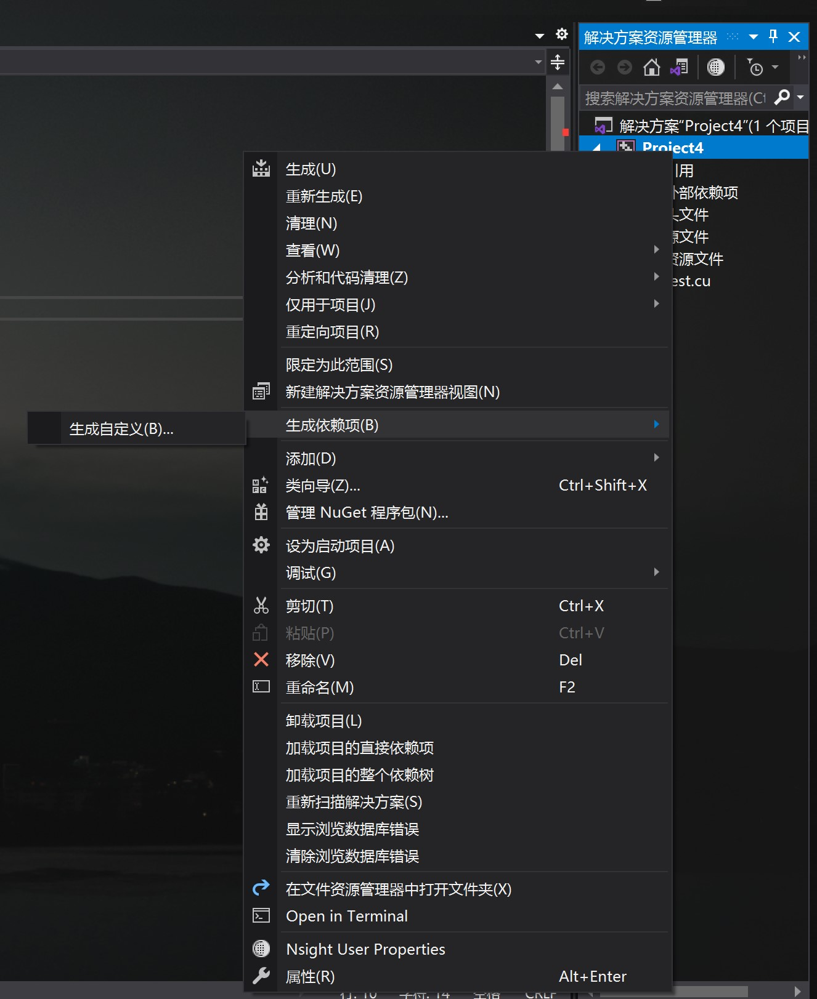
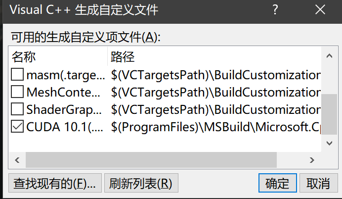
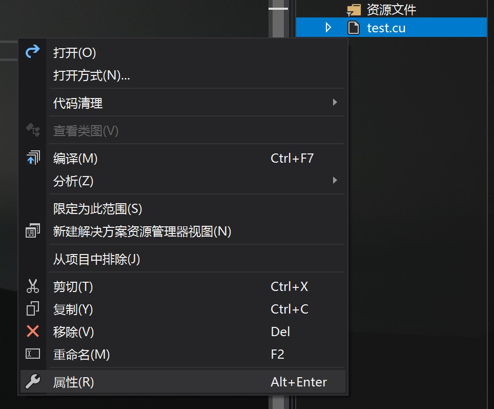

CUDA 安装
CUDA 的安装比较简单，下载了安装包以后一直点 Next 就行了，可以参考这个博客。
安装完以后对 CUDA 进行一下测试，在命令行执行 nvcc -V 得到下面的结果说明安装成功
1
2
3
4
5
| $ nvcc -V
nvcc: NVIDIA (R) Cuda compiler driver
Copyright (c) 2005-2019 NVIDIA Corporation
Built on Fri_Feb__8_19:08:26_Pacific_Standard_Time_2019
Cuda compilation tools, release 10.1, V10.1.105
|
Visual Studio 配置
网上很多博客中，在 Visual Studio 中新建项目时都会有一个 NVIDIA 的模板，但是我在新建时并没有看到。所以我直接新建空白项目，然后为项目添加 CUDA 的依赖项。


然后在源文件中添加新建项，以 .cu 结尾，这里是 test.cu。然后对文件属性进行设置

设置内容为 配置属性-常规-项类型-CUDA C/C++。
然后对项目属性进行配置。首先在 配置属性-VC++ 目录-包含目录 中添加 $(CUDA_PATH)\include，然后在 配置属性-VC++ 目录-包含目录 中添加 $(CUDA_PATH)\lib\x64，在 配置属性-链接器-常规-附加库目录 中添加 $(CUDA_PATH)\lib\x64，最后在 配置属性-链接器-输入-附加依赖库 中添加
1
| cublas.lib;cublasLt.lib;cuda.lib;cudadevrt.lib;cudart.lib;cudart_static.lib;cudnn.lib;cudnn64_8.lib;cudnn_adv_infer.lib;cudnn_adv_infer64_8.lib;cudnn_adv_train.lib;cudnn_adv_train64_8.lib;cudnn_cnn_infer.lib;cudnn_cnn_infer64_8.lib;cudnn_cnn_train.lib;cudnn_cnn_train64_8.lib;cudnn_ops_infer.lib;cudnn_ops_infer64_8.lib;cudnn_ops_train.lib;cudnn_ops_train64_8.lib;cufft.lib;cufftw.lib;curand.lib;cusolver.lib;cusparse.lib;nppc.lib;nppial.lib;nppicc.lib;nppicom.lib;nppidei.lib;nppif.lib;nppig.lib;nppim.lib;nppist.lib;nppisu.lib;nppitc.lib;npps.lib;nvblas.lib;nvgraph.lib;nvml.lib;nvrtc.lib;OpenCL.lib
|
实际上上面这些就是 $(CUDA_PATH)\lib\x64 下的所有 lib 文件的文件名，每个版本的 CUDA 所包括的 lib 文件各不相同，我这里是 CUDA 10.1 版本的 lib 文件。
配置完以后就可以编译运行 .cu 文件了，打开 main.cu，输入以下测试代码
1
2
3
4
5
6
7
8
9
10
11
12
13
14
15
| #include <stdio.h>
#include "cuda.h"
#include "cuda_runtime.h"
__global__ void hello() {
printf("Hello world from device\n");
}
int main() {
hello << <1, 1 >> > ();
printf("Hello world from host\n");
cudaDeviceSynchronize();
return 0;
}
|
得到结果
1
2
| Hello world from host
Hello world from device
|